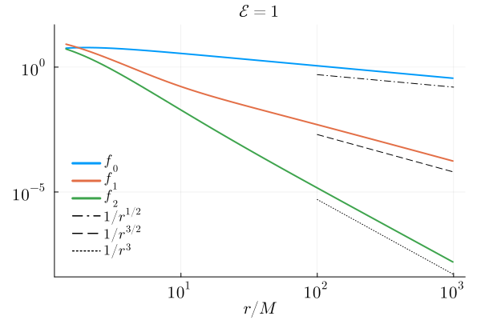
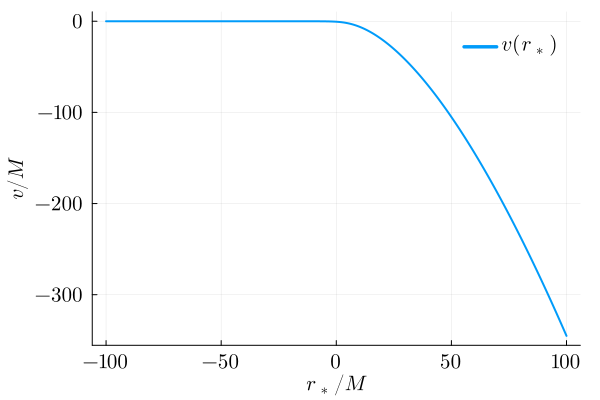
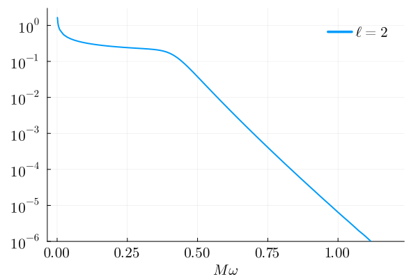

Examples
Example 1: Solving and visualizing some Teukolsky and GSN functions
In this example, we solve for the Teukolsky and the GSN function with $s = -2, \ell = 2, m = 2, a = 0.7, \omega = 0.25$ that satisfy the purely outgoing condition at infinity (i.e. UP).
using GeneralizedSasakiNakamura
using Plots, LaTeXStrings
# Specify which mode and what boundary condition
s=-2; l=2; m=2; a=0.7; omega=0.25; bc=UP; # Change to bc=IN to solve for R^in or X^in instead
# Specify where to match to ansatzes
rsin=-20; rsout=250;
# NOTE: julia uses 'just-ahead-of-time' compilation. Calling this the first time in each session will take some time
R = Teukolsky_radial(s, l, m, a, omega, bc, rsin, rsout);
# Set up a grid of the tortoise coordinate rs
rsgrid = collect(-30:1:300); # Does not have to be within [rsin, rsout]
# Set up a grid of the Boyer-Lindquist r coordinate
# Convert from rsgrid using r_from_rstar(a, rs)
rgrid = [r_from_rstar(a, rs) for rs in rsgrid];# Visualize the Teukolsky function
# Use the 'shortcut' interface to access the function
plot(rgrid, [real(R(r)) for r in rgrid], label="real")
# Use the full interface to access the function (and its derivative)
plot!(rgrid, [imag(R.Teukolsky_solution(r)[1]) for r in rgrid], label="imag")
plot!(
legendfontsize=14,
xguidefontsize=14,
yguidefontsize=14,
xtickfontsize=14,
ytickfontsize=14,
foreground_color_legend=nothing,
background_color_legend=nothing,
legend=:topleft,
xlabel=L"r/M",
ylabel=L"R(r)",
)
title!("$(R.boundary_condition) solution")
# Visualize the underlying GSN function
# Use the 'shortcut' interface to access the function
plot(rsgrid, [real(R.GSN_solution(rs)) for rs in rsgrid], label="real")
# Use the full interface to access the function (and its derivative)
plot!(rsgrid, [imag(R.GSN_solution.GSN_solution(rs)[1]) for rs in rsgrid], label="imag")
plot!(
legendfontsize=14,
xguidefontsize=14,
yguidefontsize=14,
xtickfontsize=14,
ytickfontsize=14,
foreground_color_legend=nothing,
background_color_legend=nothing,
legend=:bottomright,
xlabel=L"r_{*}/M",
ylabel=L"X(r_{*})",
)
title!("$(R.boundary_condition) solution")
# Visualize the underlying complex frequency function
# NOTE: for this one, rstar has to be within [rsin, rsout]
plot(collect(rsin:0.1:rsout), [real(R.GSN_solution.numerical_Riccati_solution(rs)[2]) for rs in rsin:0.1:rsout], label="real")
# Use the full interface to access the function (and its derivative)
plot!(collect(rsin:0.1:rsout), [imag(R.GSN_solution.numerical_Riccati_solution(rs)[2]) for rs in rsin:0.1:rsout], label="imag")
plot!(
legendfontsize=14,
xguidefontsize=14,
yguidefontsize=14,
xtickfontsize=14,
ytickfontsize=14,
foreground_color_legend=nothing,
background_color_legend=nothing,
legend=:bottomright,
xlabel=L"r_{*}/M",
ylabel=L"d\Phi(r_{*})/dr_{*}",
)
title!("$(R.boundary_condition) solution")
Example 2: Plotting reflectivity of black holes (in GSN formalism)
using GeneralizedSasakiNakamura
using Plots, LaTeXStrings
sarr = [-2, -1, 0, 1, 2];
l=2;m=2;a=0.0;
reflectivity_from_inf_nonrotating = Dict()
omegas = collect(0.01:0.01:2.0);
for s in sarr
reflectivity_from_inf_nonrotating[s] = []
for omg in omegas
Xin = GSN_radial(s, l, m, a, omg, IN, -20, 250)
append!(reflectivity_from_inf_nonrotating[s], Xin.reflection_amplitude/Xin.incidence_amplitude)
end
endplot(omegas, abs.(reflectivity_from_inf_nonrotating[-2]), linewidth=2, color=theme_palette(:auto)[1], label=L"s = \pm 2")
plot!(omegas, abs.(reflectivity_from_inf_nonrotating[-1]), linewidth=2, color=theme_palette(:auto)[2], label=L"s = \pm 1")
plot!(omegas, abs.(reflectivity_from_inf_nonrotating[0]), linewidth=2, color=theme_palette(:auto)[3], label=L"s = 0")
plot!(
legendfontsize=14,
xguidefontsize=14,
yguidefontsize=14,
xtickfontsize=14,
ytickfontsize=14,
foreground_color_legend=nothing,
background_color_legend=nothing,
legend=:bottomright,
formatter=:latex,
xlabel=L"M\omega",
ylabel=L"| \hat{B}^{\mathrm{ref}}_{\mathrm{SN}}/\hat{B}^{\mathrm{inc}}_{\mathrm{SN}} |",
left_margin = 2Plots.mm,
right_margin = 3Plots.mm,
)
title!(L"a/M = 0")
sarr = [-2, -1, 0, 1, 2];
l=2;m=2;a=0.7;
reflectivity_from_inf_rotating = Dict()
omegas = collect(0.01:0.01:2.0);
for s in sarr
reflectivity_from_inf_rotating[s] = []
for omg in omegas
Xin = GSN_radial(s, l, m, a, omg, IN, -20, 250)
append!(reflectivity_from_inf_rotating[s], Xin.reflection_amplitude/Xin.incidence_amplitude)
end
endplot(omegas, abs.(reflectivity_from_inf_rotating[-2]), linewidth=2, color=theme_palette(:auto)[1], label=L"s = -2")
plot!(omegas, abs.(reflectivity_from_inf_rotating[-1]), linewidth=2, color=theme_palette(:auto)[2], label=L"s = -1")
plot!(omegas, abs.(reflectivity_from_inf_rotating[0]), linewidth=2, color=theme_palette(:auto)[3], label=L"s = 0")
plot!(omegas, abs.(reflectivity_from_inf_rotating[1]), linewidth=2, color=theme_palette(:auto)[4], label=L"s = 1")
plot!(omegas, abs.(reflectivity_from_inf_rotating[2]), linewidth=2, color=theme_palette(:auto)[5], label=L"s = 2")
plot!(
legendfontsize=14,
xguidefontsize=14,
yguidefontsize=14,
xtickfontsize=14,
ytickfontsize=14,
foreground_color_legend=nothing,
background_color_legend=nothing,
legend=:bottomright,
formatter=:latex,
xlabel=L"M\omega",
ylabel=L"| \hat{B}^{\mathrm{ref}}_{\mathrm{SN}}/\hat{B}^{\mathrm{inc}}_{\mathrm{SN}} |",
left_margin = 2Plots.mm,
right_margin = 3Plots.mm,
)
title!(L"a/M = 0.7")
Example 3: Calculating the gravitational waveform induced by a particle falling radially into a Kerr black hole
Here, we show an example of our code implementation in calculating the gravitational waveform induced by a particle falling radially into a Kerr black hole along its spin axis (i.e. $\theta=0$ or $z$-axis). The particle has zero initial velocity at infinity, which we refer to as rest limit in the paper. It also means the orbital energy per mass is $\mathcal{E}=1$.
using GeneralizedSasakiNakamura
using SpinWeightedSpheroidalHarmonics
using DifferentialEquations
using Statistics
using CubicSplines
using QuadGK
using Plots, LaTeXStringsConstruct the source term
\[\mathcal{W}_{nn}=f_0(r)e^{i\chi(r)}+\int_{r}^\infty f_1(r_1)e^{i\chi(r_1)}d r_1+\int_r^\infty dr_1\int_{r_1}^\infty f_2(r_2)e^{i\chi(r_2)}dr_2,\]
where
\[f_0(r)=\frac{\mathscr{A}}{\omega^2}w_{nn}^{(0)}(r),\]
\[f_1(r)=\frac{\mathscr{A}}{\omega^2}\left[{w_{nn}^{(0)}}'(r)+i\xi(r)w_{nn}^{(0)}(r)+w_{nn}^{(1)}(r)\right],\]
\[f_2(r)=\frac{\mathscr{A}}{\omega^2}\left[{w_{nn}^{(1)}}'(r)+i\xi(r)w_{nn}^{(1)}(r)\right],\]
\[\chi(r)=\omega \left[t(r)+r_*(r)\right],\]
with
\[w_{nn}^{(0)}(r)=\frac{1}{2}r^2\rho\bar{\rho}^2u^r \mathscr{L}_1^\dagger\left[\rho^{-4}\mathscr{L}_2^\dagger\left(\rho^3S\right)\right],\]
\[w_{nn}^{(1)}(r)=w_{nn}^{(0)}(r)\left(\frac{\mathcal{N}}{u^r}\right)'\frac{u^r}{\mathcal{N}}+{w_{nn}^{(0)}}'(r)+i\xi(r)w_{nn}^{(0)}(r).\]
In our case $\xi(r)\equiv 0$, $\mathscr{A}=-1$ and
\[u^t=\frac{r^2+a^2}{\Delta^2},\]
\[u^r=-\sqrt{\frac{2r}{r^2+a^2}},\]
\[\mathcal{N}=u^t+\frac{\Sigma}{\Delta}u^r=\frac{r^2+a^2}{\Delta}\left(1-\sqrt{\frac{2r}{r^2+a^2}}\right).\]
One can see that $\mathcal{N}(r\to r_+)$ is non-vanishing but hard to compute directly because both the denominator and the term in the bracket are zero in the limit. We also need its first- and second-order derivatives with respect to $r$. So we expand them into series of $x=r-r_+$ when $r_*\to-\infty$, namely
\[\mathcal{N}(r\to r_+)=n^0_0+n^0_1x+n^0_2x^2+\dots,\]
\[\mathcal{N}'(r\to r_+)=n^1_0+n^1_1x+n^1_2x^2+\dots,\]
\[\mathcal{N}''(r\to r_+)=n^2_0+n^2_1x+n^2_2x^2+\dots.\]
If $x<3\times10^{-3}$, we can reach the $10^{-12}$ relative tolerance by truncating at $n_5^{0,1,2}$.
function N_expansions(r, a)
rp = 1 + sqrt(1 - a^2)
x = r - rp
# We find it more convenient to work with ν = arcsin(a)
ν = asin(a)
if x < 3e-3
# The expansion coefficients of N
n00 = 1 / 2
n01 = 1 / (8 + 8 * sec(ν))
n02 = (sin(ν)^2 - cos(ν)) / (16 * (1 + cos(ν))^2)
n03 = (5 * cos(ν)^3 - 8 * sin(ν)^2) / (128 * (1 + cos(ν))^3)
n04 = (-7 * cos(ν) + (19 + 15 * cos(ν)) * sin(ν)^2 - 7 * sin(ν)^4)/(256 * (1 + cos(ν))^4)
n05 = (21 * cos(ν) - 4 * (15 + 19 * cos(ν) + 7 * cos(2 * ν)) * sin(ν)^2
+ 21 * cos(ν) * sin(ν)^4)/(1024 * (1 + cos(ν))^5)
N = n00 + n01 * x + n02 * x^2 + n03 * x^3 + n04 * x^4 + n05 * x^5
# The expansion coefficients of N'
n10 = 1/(8 + 8 * sec(ν))
n11 = -(1/64) * (-1 + 2 * cos(ν) + cos(2 * ν)) * sec(ν/2)^4
n12 = (3 * (-16 + 15 * cos(ν) + 16 * cos(2 * ν) + 5 * cos(3 * ν)) * sec(ν/2)^6)/4096
n13 = -(((-55 + 26 * cos(ν) + 48 * cos(2 * ν) + 30 * cos(3 * ν)
+ 7 * cos(4 * ν)) * sec(ν/2)^8)/8192)
n14 = (5 * (-368 + 74 * cos(ν) + 256 * cos(2 * ν) + 241 * cos(3 * ν)
+ 112 * cos(4 * ν) + 21 * cos(5 * ν)) * sec(ν/2)^10)/524288
n15 = -((3 * (-1234 + 36 * cos(ν) + 639 * cos(2 * ν) + 810 * cos(3 * ν)
+ 562 * cos(4 * ν) + 210 * cos(5 * ν) + 33 * cos(6 * ν)) * sec(ν/2)^12)/2097152)
Np = n10 + n11 * x + n12 * x^2 + n13 * x^3 + n14 * x^4 + n15 * x^5
# The expansion coefficients of N''
n20 = -(1/64) * (-1 + 2 * cos(ν) + cos(2 * ν)) * sec(ν/2)^4
n21 = (3 * (-16 + 15 * cos(ν) + 16 * cos(2 * ν) + 5 * cos(3 * ν)) * sec(ν/2)^6)/2048
n22 = -((3 * (-55 + 26 * cos(ν) + 48 * cos(2 * ν) + 30 * cos(3 * ν)
+ 7 * cos(4 * ν)) * sec(ν/2)^8)/8192)
n23 = (5 * (-368 + 74 * cos(ν) + 256 * cos(2 * ν) + 241 * cos(3 * ν) + 112 * cos(4 * ν)
+ 21 * cos(5 * ν)) * sec(ν/2)^10)/131072
n24 = -((15 * (-1234 + 36 * cos(ν) + 639 * cos(2 * ν) + 810 * cos(3 * ν) + 562 * cos(4 * ν)
+ 210 * cos(5 * ν) + 33 * cos(6 * ν)) * sec(ν/2)^12)/2097152)
n25 = (1/134217728) * 21 * (-33472 - 2777 * cos(ν) + 12192 * cos(2 * ν) + 19697 * cos(3 * ν)
+ 18112 * cos(4 * ν) + 10107 * cos(5 * ν) + 3168 * cos(6 * ν) + 429 * cos(7 * ν)) * sec(ν/2)^14
Npp = n20 + n21 * x + n22 * x^2 + n23 * x^3 + n24 * x^4 + n25 * x^5
else
N = 1/(1 + (sqrt(2) * r)/sqrt(r * (a^2 + r^2)))
Np = (-a^2 * r + r^3)/(sqrt(2) * sqrt(r * (a^2 + r^2)) * (sqrt(2) * r + sqrt(r * (a^2 + r^2)))^2)
Npp = (r * (a^4 * (6 * r + sqrt(2) * sqrt(r * (a^2 + r^2))) - r^4 * (2 * r
+ 3 * sqrt(2) * sqrt(r * (a^2 + r^2))) + 2 * a^2 * r^2 * (6 * r + 5 * sqrt(2)
* sqrt(r * (a^2 + r^2))))) / (4 * (r * (a^2 + r^2))^(3/2) * (sqrt(2) * r + sqrt(r * (a^2 + r^2)))^3)
end
return N, Np, Npp
endWe define
\[P = \frac{1}{2}r^2\rho\bar{\rho}^2=-\frac{r^2}{2(r-ia)(r+ia)^2},\]
\[Q = \mathscr{L}_1^\dagger\left[\rho^{-4}\mathscr{L}_2^\dagger\left(\rho^3S\right)\right] = 4(ia-r)\left.\frac{\partial^2{}_{-2}S_{\ell 0}^{a\omega}(\theta)}{\partial\theta^2}\right|_{\theta=0},\]
\[U = u^r.\]
The components in $f_{0,1,2}$ will be
\[w_{nn}^{(0)} = PUQ,\]
\[{w_{nn}^{(0)}}' = P'UQ+PU'Q+PUQ',\]
\[{w_{nn}^{(0)}}''=P''UQ+PU''Q+PUQ''+2P'U'Q+2P'UQ'+2PU'Q',\]
\[{w_{nn}^{(1)}} = w_{nn}^{(0)}\left(\frac{\mathcal{N}'}{\mathcal{N}}-\frac{U'}{U}\right)+{w_{nn}^{(0)}}',\]
\[{w_{nn}^{(1)}}' = {w_{nn}^{(0)}}'(\frac{\mathcal{N}'}{\mathcal{N}}-\frac{U'}{U})+{w_{nn}^{(0)}}\left[\frac{\mathcal{N}''}{\mathcal{N}}-\left(\frac{\mathcal{N}'}{\mathcal{N}}\right)^2-\frac{U''}{U}+\left(\frac{U'}{U}\right)^2\right]+{w_{nn}^{(0)}}''.\]
Numerically, we give $f_{0,1,2}$ as functions of $r$
function f_terms(a, ω, S2)
function f_r(r)
N, Np, Npp = N_expansions(r, a)
P = - r^2 / (2 * (-im*a + r) * (im*a + r)^2)
Pp = (r * (-2*a^2 - im*a*r + r^2))/(2 * (-im*a + r)^2 * (im*a + r)^3)
Ppp = (im * (a^4 + 2*im*a^3*r - 6*a^2*r^2 - 2*im*a*r^3 + r^4))/((a - im*r)^4 * (a + im*r)^3)
Q = 4 * (im * a - r) * S2
Qp = - 4 * S2
Qpp = 0
U = -((sqrt(2) * r)/sqrt(r * (a^2 + r^2)))
Up = (r * (-a^2 + r^2))/(sqrt(2) * (r * (a^2 + r^2))^(3/2))
Upp = (r * (a^4 + 10 * a^2 * r^2 - 3 * r^4))/(2 * sqrt(2) * (r * (a^2 + r^2))^(5/2))
wnn0 = P*U*Q
dwnn0 = Pp*U*Q + P*Up*Q + P*U*Qp
ddwnn0 = Ppp*U*Q + P*Upp*Q + P*U*Qpp + 2*Pp*Up*Q + 2*Pp*U*Qp + 2*P*Up*Qp
wnn1 = wnn0 * (Np/N - Up/U) + dwnn0
dwnn1 = dwnn0 * (Np/N - Up/U) + wnn0 * (Npp/N - (Np/N)^2 - Upp/U + (Up/U)^2) + ddwnn0
f0 = - wnn0 / ω^2
f1 = - (wnn1 + dwnn0) / ω^2
f2 = - dwnn1 / ω^2
return f0, f1, f2
end
return f_r
endOne can reproduce Figure 4(a) of our paper by
rs_values = range(-100, 1000, 1000)
a = 0.9
ω = 0.5
S2 = 1
f_r = f_terms(a, ω, S2)
r_values = [r_from_rstar(a, r) for r in rs_values]
f0_values = [abs(f_r(r)[1]) for r in r_values]
f1_values = [abs(f_r(r)[2]) for r in r_values]
f2_values = [abs(f_r(r)[3]) for r in r_values]
r_benchmark = 10 .^range(2, 3, 20)
r_to_minus_half = [5*r^(-0.5) for r in r_benchmark]
r_to_minus_onehalf = [2*r^(-1.5) for r in r_benchmark]
r_to_minus_three = [5*r^(-3.0) for r in r_benchmark]
f_terms_rest = plot(r_values,
f0_values,
xlabel = L"r/M",
label = L"f_0",
legendfont = font(12,"Computer Modern"),
legendfontsize=14,
xguidefontsize=14,
yguidefontsize=14,
xtickfontsize=14,
ytickfontsize=14,
foreground_color_legend=nothing,
background_color_legend=nothing,
legend=:topright,
formatter=:latex,
yscale =:log10,
xscale =:log10,
linewidth=2.0,
left_margin = 2Plots.mm,
right_margin = 3Plots.mm)
plot!(r_values,
f1_values,
xlabel = L"r/M",
label = L"f_1",
legendfont = font(12,"Computer Modern"),
legendfontsize=14,
xguidefontsize=14,
yguidefontsize=14,
xtickfontsize=14,
ytickfontsize=14,
foreground_color_legend=nothing,
background_color_legend=nothing,
legend=:topright,
formatter=:latex,
yscale =:log10,
xscale =:log10,
linewidth=2.0,
left_margin = 2Plots.mm,
right_margin = 3Plots.mm)
plot!(r_values,
f2_values,
xlabel = L"r/M",
label = L"f_2",
legendfont = font(12,"Computer Modern"),
legendfontsize=14,
xguidefontsize=14,
yguidefontsize=14,
xtickfontsize=14,
ytickfontsize=14,
foreground_color_legend=nothing,
background_color_legend=nothing,
legend=:topright,
formatter=:latex,
yscale =:log10,
xscale =:log10,
linewidth=2.0,
left_margin = 2Plots.mm,
right_margin = 3Plots.mm)
plot!(r_benchmark,
r_to_minus_half,
xlabel = L"r/M",
label = L"1/r^{1/2}",
legendfont = font(12,"Computer Modern"),
legendfontsize=14,
xguidefontsize=14,
yguidefontsize=14,
xtickfontsize=14,
ytickfontsize=14,
foreground_color_legend=nothing,
background_color_legend=nothing,
legend=:topright,
formatter=:latex,
yscale =:log10,
xscale =:log10,
linewidth=1.0,
left_margin = 2Plots.mm,
right_margin = 3Plots.mm,
color =:black,
linestyle =:dashdot)
plot!(r_benchmark,
r_to_minus_onehalf,
xlabel = L"r/M",
label = L"1/r^{3/2}",
legendfont = font(12,"Computer Modern"),
legendfontsize=14,
xguidefontsize=14,
yguidefontsize=14,
xtickfontsize=14,
ytickfontsize=14,
foreground_color_legend=nothing,
background_color_legend=nothing,
legend=:topright,
formatter=:latex,
yscale =:log10,
xscale =:log10,
linewidth=1.0,
left_margin = 2Plots.mm,
right_margin = 3Plots.mm,
color =:black,
linestyle =:dash)
plot!(r_benchmark,
r_to_minus_three,
xlabel = L"r/M",
label = L"1/r^3",
title = L"\mathcal{E}=1",
legendfont = font(12,"Computer Modern"),
legendfontsize=12,
xguidefontsize=14,
yguidefontsize=14,
xtickfontsize=14,
ytickfontsize=14,
foreground_color_legend=nothing,
background_color_legend=nothing,
legend=:bottomleft,
formatter=:latex,
yscale =:log10,
xscale =:log10,
linewidth=1.0,
color =:black,
left_margin = 2Plots.mm,
right_margin = 3Plots.mm,
linestyle =:dot,
ylim = (4e-9, 50))
The phase term
\[t(r_*)=\int_{r_*^{\rm in}}^{r_*}\frac{d t}{d r} \frac{d r}{d \tilde{r}_*} d \tilde{r}_*=\int_{r_*^{\rm in}}^{r_*}\frac{u^t}{u^r} \frac{\Delta}{r^2+a^2} d \tilde{r}_* = \int_{r_*^{\rm in}}^{r_*}\frac{1}{u^r} d \tilde{r}_*\]
can be solved numerically from some initial value $t(r_*^{\rm in})= - r_*^{\rm in}$ outwards to make sure $v(r_*^{\rm in})=t(r_*^{\rm in})+r_*^{\rm in}=0$.
function t_of_rs(rs_out, a)
function f!(du, u, p, rs)
r = r_from_rstar(a, rs)
ur = -((sqrt(2) * r)/sqrt(r * (a^2 + r^2)))
du[1] = 1 / ur
end
rs_in = min(-100, 50*log10(1-a))
t0 = - rs_in
u0 = [t0]
prob = ODEProblem(f!, u0, (rs_in, rs_out))
sol = solve(prob, abstol=1e-8, reltol=1e-8)
return sol, rs_in, rs_out
endtrs = t_of_rs(1000, 0.9)
rs_values = range(-100, 100, 1000)
v_values = [trs[1](rs)[1]+rs for rs in rs_values]
plot(rs_values,
v_values,
xlabel = L"r_*/M",
ylabel = L"v/M",
label = L"v(r_*)",
legendfont = font(12,"Computer Modern"),
legendfontsize=14,
xguidefontsize=14,
yguidefontsize=14,
xtickfontsize=14,
ytickfontsize=14,
foreground_color_legend=nothing,
background_color_legend=nothing,
legend=:topright,
formatter=:latex,
linewidth=2.0,
left_margin = 2Plots.mm,
right_margin = 3Plots.mm)
We precompue the integrals in $\mathcal{W}_{nn}$ as ODE solving problems. The truncation of the integral $r_*^{\rm max}\to\infty$ can be set to some large numbers to make sure the convergence and precision.
function precompute_W_integral(trs, f, a, omega)
trs_sol, rsmin, rsmax = trs
function f1!(du, u, p, rs)
r = r_from_rstar(a, rs)
du[1] = - f(r)[2] * exp(1im * omega * (trs_sol(rs)[1] + rs)) * (r^2 - 2*r + a^2)/(r^2 + a^2)
end
function f2!(du, u, p, rs)
r = r_from_rstar(a, rs)
du[1] = - f(r)[3] * exp(1im * omega * (trs_sol(rs)[1] + rs)) * (r^2 - 2*r + a^2)/(r^2 + a^2)
end
u0 = ComplexF64[0.0]
prob1 = ODEProblem(f1!, u0, (rsmax, rsmin))
sol1 = solve(prob1, abstol=1e-8, reltol=1e-8)
prob2 = ODEProblem(f2!, u0, (rsmax, rsmin))
sol2 = solve(prob2, abstol=1e-8, reltol=1e-8)
function f2r!(du, u, p, rs)
r = r_from_rstar(a, rs)
du[1] = - sol2(rs)[1] * (r^2 - 2*r + a^2)/(r^2 + a^2)
end
prob2r = ODEProblem(f2r!, u0, (rsmax, rsmin))
sol2r = solve(prob2r, abstol=1e-8, reltol=1e-8)
return sol1, sol2r
endfunction Wnn_integrals(l, a, omega; rsout = 10000)
SH = spin_weighted_spheroidal_harmonic(-2, l, 0, a*omega)
S2 = SH(0, 0; theta_derivative=2)
f = f_terms(a, omega, S2)
rsout = max(rsout, 100pi*abs(omega)^(-1.0))
trs = t_of_rs(rsout * 3, a)
Wnn1, Wnn2 = precompute_W_integral(trs, f, a, omega)
function Wnn(rs)
r = r_from_rstar(a, rs)
χ = omega * (trs[1](rs)[1] + rs)
phase = exp(1im * χ)
W = f(r)[1] * phase + Wnn1(rs)[1] + Wnn2(rs)[1]
return W
end
return Wnn
endOne can reproduce Figure 4(b) of our paper by
rs_values = range(-50, 100, 1000)
l = 2
a = 0.9
ω = 0.5
W_1 = Wnn_integrals(l, a, ω)
W_values = [W_1(rs)[1] for rs in rs_values]
W1 = plot(rs_values,
real.(W_values),
xlabel = L"r_{\!\!\!\! _*}/M",
label = L"\mathrm{Re}\ \mathcal{W}",
legendfont = font(12,"Computer Modern"),
legendfontsize=14,
xguidefontsize=14,
yguidefontsize=14,
xtickfontsize=14,
ytickfontsize=14,
foreground_color_legend=nothing,
background_color_legend=nothing,
legend=:topright,
formatter=:latex,
linewidth=2.0,
left_margin = 2Plots.mm,
right_margin = 3Plots.mm)
plot!(rs_values,
imag.(W_values),
xlabel = L"r_{\!\!\!\! _*}/M",
label = L"\mathrm{Im}\ \mathcal{W}",
legendfont = font(12,"Computer Modern"),
legendfontsize=14,
xguidefontsize=14,
yguidefontsize=14,
xtickfontsize=14,
ytickfontsize=14,
foreground_color_legend=nothing,
background_color_legend=nothing,
legend=:topright,
formatter=:latex,
linewidth=2.0,
left_margin = 2Plots.mm,
right_margin = 3Plots.mm)
Then we do Green's function convolution integral defined by
\[\frac{X_{\ell 0\omega}^\infty}{c_0}=\frac{1}{2i\omega B_{\rm SN}^{\rm inc}}\int_{r_*^{\rm in}}^{r_*^{\rm out}}\frac{\Delta X_{\ell 0 \omega}^{\rm in}(r_*)\mathcal{W}_{nn}(r_*)}{r^2(r^2+a^2)^{3/2}}e^{-i\omega r_*}d r_*,\]
where $r_*^{\rm in}\to -\infty$ and $r_*^{\rm out}\to +\infty$. According to our numerical experiment, $r_*^{\rm in}={\rm min}\left(-50,50\lg(1-a)\right)$ and $r_*^{\rm out}={\rm max}\left(5000, \frac{50\pi}{|\omega|}\right)$ are sufficient for us to achieve $10^{-8}$ relative error.
To avoid integrating too far away, we define a new function "baseline" to find the baseline of the oscillatory integral and iterate the process by doubling the $r_*^{\rm out}$ until we find the baseline.
function baseline(f, x0, x1; npoints=1000)
function compute_baseline(y::Vector{Float64})
raw_extrema = []
for i in 2:length(y)-1
if y[i] > y[i-1] && y[i] > y[i+1]
push!(raw_extrema, (i, y[i], :max))
elseif y[i] < y[i-1] && y[i] < y[i+1]
push!(raw_extrema, (i, y[i], :min))
end
end
if isempty(raw_extrema)
return NaN
end
cleaned = [raw_extrema[1]]
for i in 2:length(raw_extrema)
if raw_extrema[i][3] != cleaned[end][3]
push!(cleaned, raw_extrema[i])
end
end
types = [ext[3] for ext in cleaned]
nmax, nmin = count(==( :max), types), count(==( :min), types)
if nmax > nmin
cleaned = filter(e -> e[3] == :min || e !== last(cleaned), cleaned)
elseif nmin > nmax
cleaned = filter(e -> e[3] == :max || e !== last(cleaned), cleaned)
end
maxima = [y for (_, y, t) in cleaned if t == :max]
minima = [y for (_, y, t) in cleaned if t == :min]
if isempty(maxima) || isempty(minima)
return NaN
end
return (mean(maxima) + mean(minima)) / 2
end
xs = range(x0, x1; length=npoints)
ys = f.(xs)
baseline_real = compute_baseline(real.(ys))
baseline_imag = compute_baseline(imag.(ys))
return baseline_real + im * baseline_imag
endfunction SN_convolution(l, omega, a; rsout = 5000, rsin = - 50)
s = -2
m = 0
rsin = min(rsin, 50*log10(1-a))
rsout = max(50pi*abs(omega)^(-1.0), rsout)
X = GSN_radial(s, l, m, a, omega, IN, rsin, rsout)
Binc = X.incidence_amplitude
W = Wnn_integrals(l, a, omega; rsout = rsout)
function integrand!(du, u, p, rs)
r = r_from_rstar(a, rs)
du[1] = W(rs)[1] * X(rs) * (r^2 - 2*r + a^2)/((r^2 + a^2)^(3/2)*r^2) * exp(-1im * omega * rs)
end
u0 = ComplexF64[0.0]
prob = ODEProblem(integrand!, u0, (rsin, rsout))
sol = solve(prob, abstol=1e-8, reltol=1e-8)
function soln(rs)
return sol(rs)[1] / (2im*omega*Binc)
end
Δr = 0.1*rsout
result = baseline(soln, rsout-Δr, rsout)
if abs(result) === NaN
return SN_convolution(l, omega, a; rsout = 2 * rsout, rsin = rsin)
else
return result
end
end@time SN_convolution(2, 1e-3, 0.9) 11.004745 seconds (44.25 M allocations: 1.943 GiB, 9.33% gc time, 66.80% compilation time: <1% of which was recompilation)
1.384211107451771 - 0.9020032118235283im@time SN_convolution(2, 0.5, 0.9) 0.745898 seconds (5.46 M allocations: 244.566 MiB, 1.75% compilation time)
-0.011973774895345117 + 0.035421356682873745imWe compute the amplitude spectrum $\left|\frac{X_{\ell 0\omega}^\infty}{c_0}\right|$ as a function of $\omega$ with $\ell=2$ and $a=0.9$ as an example. The code will run for about 3 minutes on an Apple m2 air.
omega_values_1 = range(-1.2, -0.01, 95)
omega_values_2 = range(-0.01, -0.001, 6)
omega_values_3 = range(0.001, 0.01, 6)
omega_values_4 = range(0.01, 1.2, 95)
# Alternative, nonuniform FFT can be used
omega_values = union(omega_values_1, omega_values_2, omega_values_3, omega_values_4)
@time AmpX_values_2_rest = [SN_convolution(2, omega, 0.9) for omega in omega_values]
println()174.357890 seconds (1.21 G allocations: 53.720 GiB, 9.52% gc time, 0.01% compilation time)One can reproduce the $\ell=2$ curve in our Figure 6(a) by
N = Int64(length(omega_values)/2)
Amp_head_on_rest = plot(omega_values[N+1:2N],
abs.(AmpX_values_2_rest[N+1:2N]),
xlabel = L"M\omega",
label = L"\ell=2",
legendfont = font(12,"Computer Modern"),
yscale =:log10,
legendfontsize=14,
xguidefontsize=14,
yguidefontsize=14,
xtickfontsize=14,
ytickfontsize=14,
foreground_color_legend=nothing,
background_color_legend=nothing,
legend=:topright,
formatter=:latex,
linewidth=2.0,
left_margin = 2Plots.mm,
right_margin = 3Plots.mm,
ylim = (1e-6, 3))
One can also reproduce the $\ell=2$ curve of the energy spectrum
\[\left(\frac{d \mathcal{E}}{d\omega}\right)_\ell^\infty=8\omega^2\mu^2\left(\left|\frac{X_{\ell 0\omega}^\infty}{c_0}\right|^2+\left|\frac{X_{\ell 0-\omega}^\infty}{c_0}\right|^2\right)\]
in our Figure 6(b) by
Eomega_rest_2 = zeros(N)
for i in 1:N
Eomega_rest_2[i] = (abs2(AmpX_values_2_rest[N-i+1])+abs2(AmpX_values_2_rest[N+i]))*omega_values[N+i]^2*8
end
Spectrum_head_on_rest = plot(omega_values[N+1:2N],
Eomega_rest_2,
xlabel = L"M\omega",
ylabel = L"\left.\left\langle d\mathcal{E}/d\omega\right\rangle^\infty_\ell\right/(\mathcal{E}^2\mu^2)",
label = L"\ell=2",
legendfont = font(12,"Computer Modern"),
yscale =:log10,
legendfontsize=14,
xguidefontsize=14,
yguidefontsize=14,
xtickfontsize=14,
ytickfontsize=14,
foreground_color_legend=nothing,
background_color_legend=nothing,
legend=:topright,
formatter=:latex,
linewidth=2.0,
left_margin = 2Plots.mm,
right_margin = 3Plots.mm,
ylim = (1e-10, 1e-1))
To facilitate a smoother inverse Fourier transform, we use "CubicSpline" to interpolate the off-grid $\omega$ points to compute
\[h_+-ih_\times =\sum_\ell \int_{-\infty}^\infty \tilde{h}_\ell(\omega)e^{-i\omega u} d\omega\]
,
where
\[\tilde{h}(\omega)=\frac{8\mu}{r}\frac{X_{\ell 0\omega}^\infty}{c_0}{}_{-2}S_{\ell 0}^{a\omega}(\theta,\varphi)\]
.
Here we still use $\ell=2$ as an example.
Since we have
\[\left|\frac{X_{\ell 0\omega}}{c_0}\right|\sim \omega^{(\ell -3)/3}\]
which is divergent for $\ell=2$ in the zero frequency limit. We can fix the error of $\ell=2$ oriented from truncating $|\omega_{\rm min}|=10^{-3}$ analytically by
\[\int_{0}^{\omega_{\rm min}}\omega^{-1/3}d\omega=\frac{3}{2}\omega_{\rm min}^{2/3}\]
.
One can check this analytical fix by removing it from the following inverse FT function and plot the waveform. When it is removed, the waveform is not calibrated to zero (which could be misunderstood as memory effect) when $u>0$.
function hu(omega, amplitude, a, l, θ, ϕ)
N = Int64(length(omega))
amp_swsh = zeros(ComplexF64, N)
for i in 1:N
amp_swsh[i] = amplitude[i] * spin_weighted_spheroidal_harmonic(-2, l, 0, a*omega[i])(θ, ϕ)
end
spline_re = CubicSpline(omega, real.(amp_swsh))
spline_im = CubicSpline(omega, imag.(amp_swsh))
amp(ω) = spline_re(ω) + 1im * spline_im(ω)
function h_u(u)
h1 = quadgk(ω -> amp(ω) * exp(-1im * ω * u) * 8, 1e-3, omega[end])[1]
h2 = quadgk(ω -> amp(ω) * exp(-1im * ω * u) * 8, omega[1], -1e-3)[1]
h = h1 + h2
### fix error
if l == 2
h += (amp(1e-3) + amp(-1e-3)) * (1e-3)^(2/3) * 3/2
end
###
return h
end
return h_u
endOne can reproduce the $\ell=2$ waveform in our Figure 8 by
u_values = range(-200, 200, 400)
h2 = hu(omega_values, AmpX_values_2_rest, 0.9, 2, 0.5pi, 0.0)
h2_values = [h2(u) for u in u_values]
Waveform_head_on_rest_2 = plot(u_values,
real.(h2_values),
ylabel = L"rh/\mu",
label = L"\ \ h_{\!\!\! +},\ell=2",
legendfontsize=14,
xguidefontsize=14,
yguidefontsize=14,
xtickfontsize=14,
ytickfontsize=14,
foreground_color_legend=nothing,
background_color_legend=nothing,
legend=:topright,
formatter=:latex,
linewidth= 2.0,
left_margin = 4Plots.mm,
right_margin = 2Plots.mm)
plot!(u_values,
-imag.(h2_values),
ylabel = L"rh/\mu",
label = L"\ \ h_{\!\!\! \times},\ell=2",
legendfontsize=14,
xguidefontsize=14,
yguidefontsize=14,
xtickfontsize=14,
ytickfontsize=14,
foreground_color_legend=nothing,
background_color_legend=nothing,
legend=:topright,
formatter=:latex,
linestyle = :dot,
linewidth= 2.0,
left_margin = 4Plots.mm,
right_margin = 2Plots.mm)